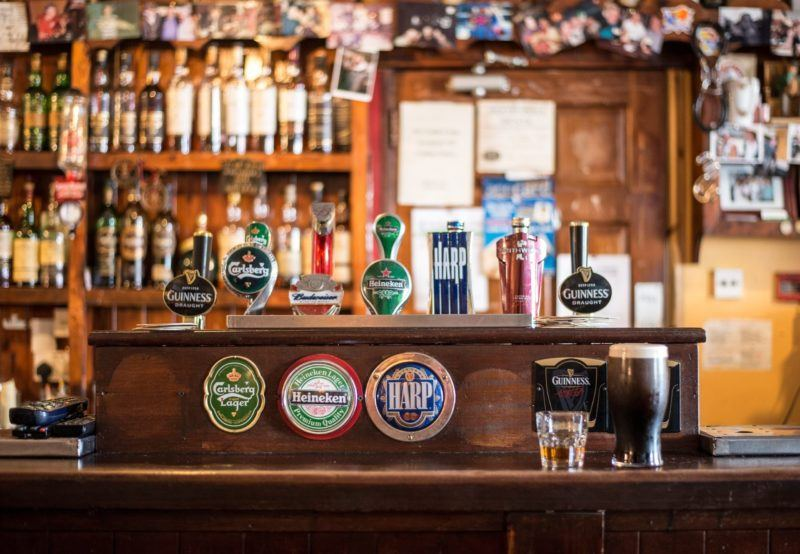
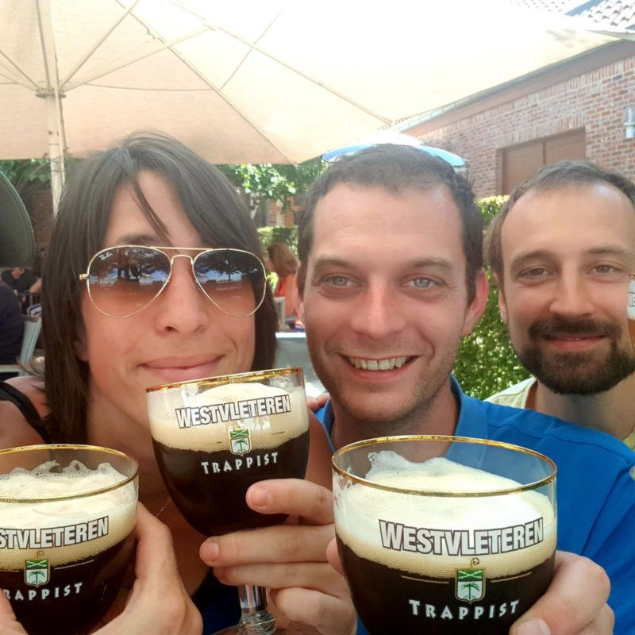
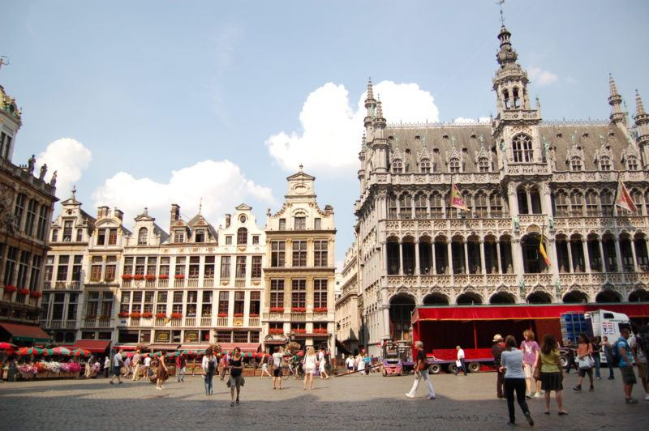

Notre blog
Découvrez nos dernières aventures brassicoles, conseils de dégustation et actualités gourmandes au cœur de Bruxelles.

Escapade bière : Pèlerinage au pays du Houblon et Westvleteren
Dégustez la culture brassicole au Hoppenland en Belgique. Vous aimez…
Lire plusTop 5 des bars à bières à Bruxelles
La capitale belge regorge de superbes bars à bières dont les sélections ont aisément de quoi vous faire saliver ! L’équipe de l’Échappée Bière vous a concocté son top 5 des bars à bières à ne pas manquer lors d’un séjour à Bruxelles…
Lire plus
Que faire lors d’une escale à Bruxelles ?
De passage à Bruxelles, ou désireux de découvrir la Capitale de la Belgique, cet article pourra grandement vous être utile. On vous fait une liste (non exhaustive) d’activités bruxelloises pour y découvrir les endroits emblématiques.
Lire plus